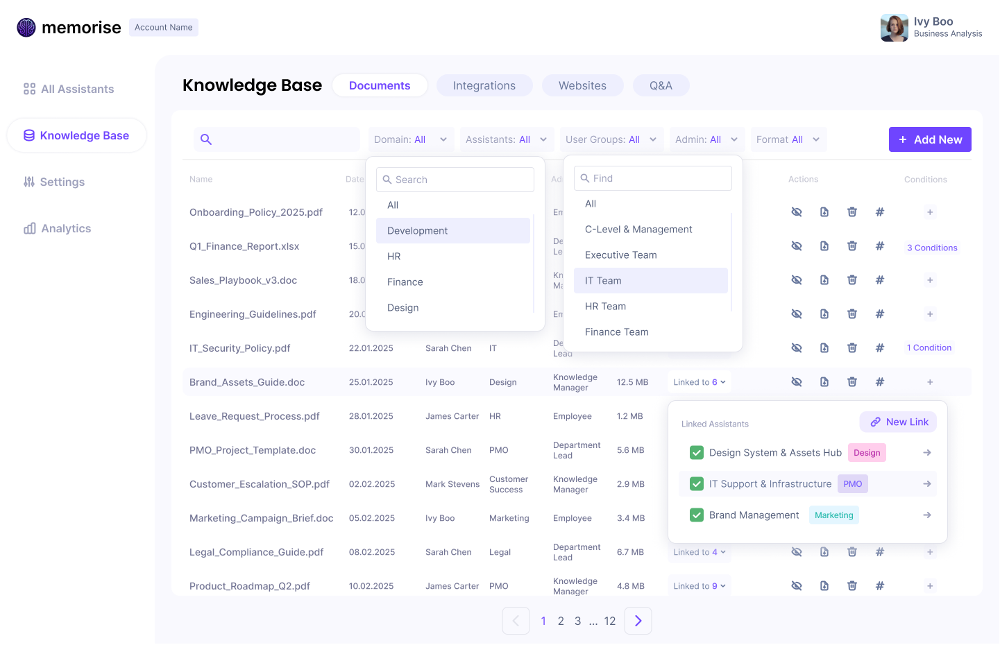

Memorise
A centralized LLM-powered knowledge orchestration platform for enterprise teams
Memorise is an internal knowledge orchestration platform that changes this. It brings scattered enterprise knowledge into a centralized, role-aware system and makes it accessible through domain-specific AI assistants — each one trained on the right documents, scoped to the right audience, and transparent about where its answers come from.

Led end-to-end product design of an AI-powered knowledge retrieval system, from system thinking to UX simplification.
1 Product Designer (me), 1 AI Engineer Lead, 2 Backend Engineers, 1 Frontend Engineer, 1 Solution Architect
6 months
Problem
Problems
- Knowledge had no ingestion standard
- No visibility into knowledge-assistant connections
- Data complexity was invisible or overwhelming
- Cross-domain overlaps were unmanageable at scale
- No feedback loop between output and source quality
- System complexity outgrew admin confidence
Design Contributions
- Aligned ingestion model with admin experience
- Unified Assistant and Knowledge Base navigation
- Designed macro and micro data visibility in layers
- Made contextual mapping admin-filterable from any angle
- Designed governance feedback loop through Preview area
- Made complexity invisible while keeping transparency intact
Design Solutions
Centralization had to coexist with domain specificity. Full visibility had to coexist with usability. Strict governance had to coexist with admin flexibility. Three tensions that shaped every design decision.
AI Enhancements
Admins don't just build the assistant — they become the user. The Preview screen closes the loop between configuration and output quality, with direct traceability back to the source.
Outcome
As the platform scaled, the experience didn't break. More assistants, more documents, more roles — the system held. Enterprise knowledge became something employees could finally trust.